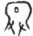
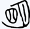

日期：2024-09-28
幽字，本身为会意字，字义为火字上方两缕细丝发出微光。后幽字下火讹变为山。
冥字，甲骨文字形为日月囚于屋中、双手摸索事物。
明字，本身为会意字，日月并出，故而明亮。
幽冥二字合体，本意便为黑暗：
夫术之为道也，精微而神；言之不足，而行有余；有余，故能兼四海，而照幽冥。
——《潜夫论·明忠》
由黑暗本意引伸出地府、冥界：
冤魂痛于幽冥。
——《魏志·袁绍传》
日语中 幽 冥 便是此意，有黄泉、冥府的含义，在日语中，还有“あの世”可以表示此意。
幽为无形、明为有形，二者合一表示世上所有有形无形之物。
仰以观于天文，俯以察于地理，是故知幽明之故。
——《易·系辞上》
幽为昏暗、明为明亮，二者合一可以表示阴阳昼夜。
祭日于坛，祭月于坎，以别幽明，以制上下。
——《礼记·祭义》
由阴阳之意引申出生死之意。
平生每相梦，不省两相知，况乃幽明隔，梦魂徒尔为。
——《江陵三梦》诗
由死生之意引申出二者所处方位的对立，即人间和阴间。
日语中 幽 明 便是此含义，可以指代人间和阴间或是明处和暗处。あの世とこの世世、冥土と現世亦是此意。
幽明 異 境 ：悼词用语，即中文的阴阳两隔。
相信你已发现幽 冥 、幽 明 的写法虽然不同，但在中文和日语里都难以依靠读音进行区分。现代汉语中幽明已经不太常用，而日语中却恰恰相反，有冥 界 、冥 土 等词的替代，使得幽明作为ゆうめい更常用一些。